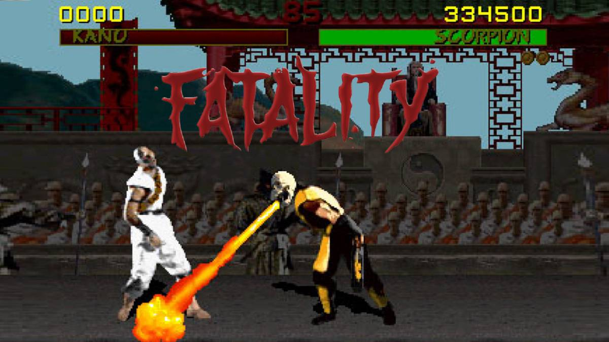
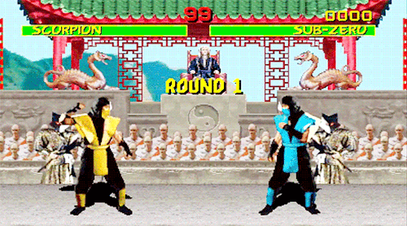
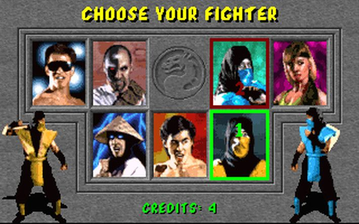

Definition
Mortal Kombat is an arcade fighting game developed and published by Midway in 1992 as the first title in the Mortal Kombat series. It was subsequently released by Acclaim Entertainment for nearly every home platform of the time. The game focuses on several characters of various intentions who enter a martial arts tournament with worldly consequences. It introduced many key aspects of the Mortal Kombat series, including the unique five-button control scheme and gory finishing moves called Fatalities.
Mortal Kombat was considered as one of the greatest video games of all time by critics and audiences in 21st century and became a best-selling game and remains one of the most popular fighting games in the genre's history, spawning numerous sequels and spin-offs over the following years and decades, beginning with Mortal Kombat II in 1993, and together with the first sequel was the subject of a successful film adaptation in 1995. However, it also sparked much controversy for its depiction of extreme violence and gore using realistic digitized graphics, and, along with the home release of Night Trap, prompted the formation of the Entertainment Software Rating Board (ESRB), a U.S. government-backed organization that set descriptor ratings for video games.
Development
Mortal Kombat creators Ed Boon and John Tobias have stated that Midway Games tasked them with the project of developing a "combat game for release within a year", which the two believed was intended to compete with the popular Street Fighter II: The World Warrior. According to Tobias, he and Boon had envisioned a fighting game similar to Karate Champ but featuring large digitized characters even before that, and the success of Street Fighter II only helped them convince the management of their idea. Boon said the development team initially consisted of four people — himself as programmer, artists John Tobias and John Vogel, and Dan Forden as sound designer.
Gameplay
Mortal Kombat is a fighting game in which players battle opponents in one-on-one matches. The fighter that completely drains the opponent's health bar first wins the round, and the first to win two rounds wins the match. Each round is timed; if both fighters still have health remaining when time runs out, the one with more health wins the round. Two players can start a game together, or a second player can join in during a single player's game to fight against him/her. If a game was in progress at the time, the winner continues it alone; if not, the winner begins a new game.
Plot
The game takes place in Earthrealm, where a tournament is being held on Shang Tsung's Island, on which seven of its locations serve as stages in the game. The introduction to Mortal Kombat explains that Shang Tsung was banished to Earthrealm 500 years previously and, with the help of the monstrous Goro, is able to seize control of the Mortal Kombat tournament in an attempt to doom the realm. For 500 years straight, Goro has been undefeated in the tournament, and now a new generation of warriors must challenge him. The player receives information about the characters in biographies displayed during the attract mode. The bulk of the game's backstory and lore was only told in a comic book, but some additional information about the characters and their motivations for entering the tournament is received upon completion of the game with each character.
Characters
Mortal Kombat includes seven playable characters, each with their own Fatality and all of whom would eventually become trademark characters and appear in sequels. The game was developed with digitized sprites based on real actors. The protagonist of the game is the Shaolin monk and Earthrealm's chosen champion Liu Kang, played by Ho-Sung Pak, who enters the tournament to defeat the evil sorcerer Shang Tsung.